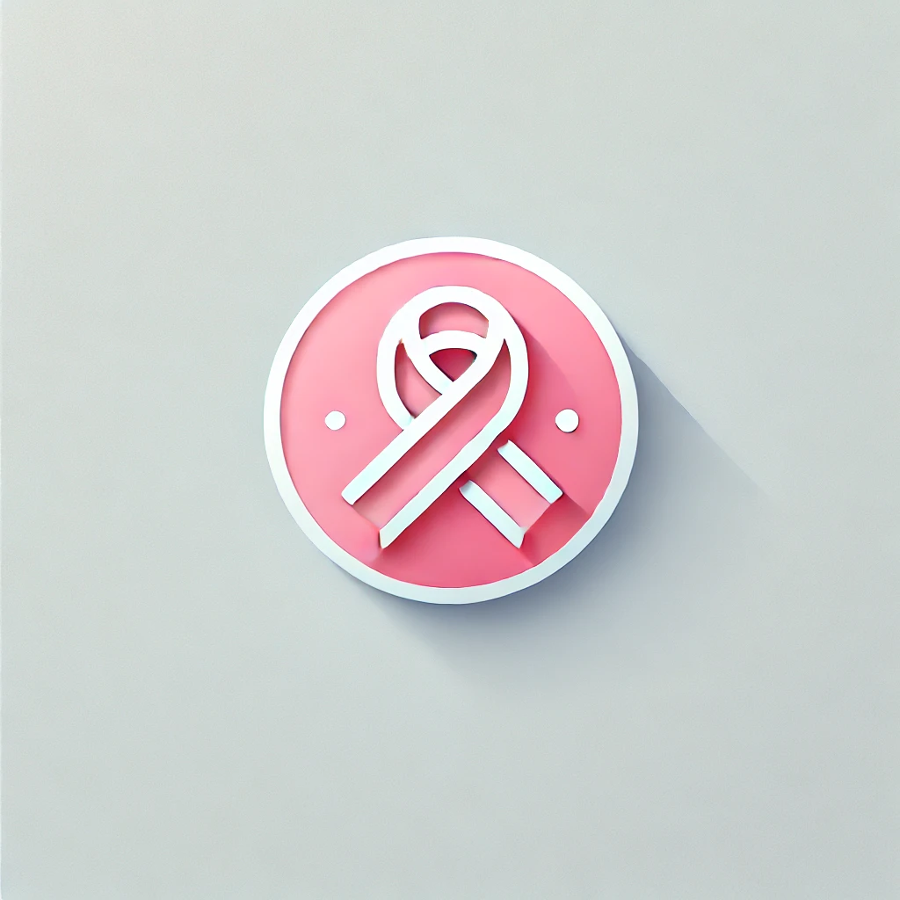
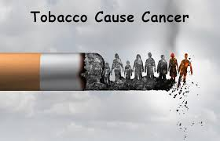
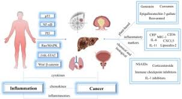

What is CAPES
CAPES stands for Cancer Awareness And Prevention System
This is a system that helps you gain knowledge about cancer diseases, enabling you to understand more about cancer.
CAPES provides a platform to assess yourself by checking the symptoms checker section to determine if you have a possibility of cancer or not.
NOTE: THIS SYSTEM DOES NOT GIVE YOU A DEFINITIVE ANSWER ABOUT WHETHER YOU HAVE CANCER OR NOT. IT ONLY PROVIDES POSSIBLE OUTCOMES. IF YOU HAVE CONCERNS, PLEASE CONSULT A DOCTOR OR MEDICAL PROFESSIONAL FOR TESTS AND DIAGNOSIS.
What is Cancer?
Cancer is a disease in which abnormal cells divide without control and can invade nearby tissues. It can occur in any part of the body and may spread to other organs through the bloodstream or lymphatic system.
Causes of Cancer
The exact cause of cancer is often unknown, but it can be influenced by a variety of factors, including genetic mutations, environmental factors, lifestyle choices (such as smoking or poor diet), and exposure to harmful chemicals or radiation.
Types of Cancer
There are several types of cancer which are determined according to the place or area which it can be occured cancer can be occures in BLOOD,SKIN, PROSTATE, LUNG, BREAST AND OTHER PARTS OF BODY

Breast Cancer
Breast cancer is a type of cancer that forms in the cells of the breasts. It is the most common cancer among women worldwide. Early detection through regular mammograms can improve survival rates.

Lung Cancer
Lung cancer is a type of cancer that begins in the lungs and is often associated with smoking. It is one of the leading causes of cancer-related deaths globally.

Prostate Cancer
Prostate cancer occurs in the prostate gland in men. It is one of the most common types of cancer in men, especially in older age groups.

Skin Cancer
Skin cancer is the abnormal growth of skin cells, often caused by excessive exposure to UV radiation from the sun or tanning beds. Early detection and treatment are crucial.
Symptom Checker
Select or add symptoms to check your risk level:
Selected Symptoms:
Risk Factors
Understanding the risk factors for cancer can help you take steps to reduce your risk. Below are some common risk factors associated with cancer:
- Smoking and Tobacco Use – Smoking is the leading cause of lung cancer and is linked to many other types of cancer, including mouth, throat, and bladder cancer.
Smoking tobacco is a major cause of cancer, with tobacco smoke containing numerous carcinogens that damage DNA and increase the risk of developing at least 16 different types of cancer, including lung, mouth, and throat cancers.
 Unhealthy Diet – A diet high in processed foods, red meat, and low in fruits and vegetables can increase the risk of colorectal and stomach cancer.
Unhealthy Diet – A diet high in processed foods, red meat, and low in fruits and vegetables can increase the risk of colorectal and stomach cancer. An unhealthy diet, especially one high in processed meats, red meat, and sugar, and low in fiber, increases the risk of developing various cancers, including colorectal, breast, and endometrial cancers.
 Lack of Physical Activity – Sedentary lifestyles are associated with an increased risk of breast, colon, and prostate cancer.
Lack of Physical Activity – Sedentary lifestyles are associated with an increased risk of breast, colon, and prostate cancer.Physical inactivity increases your risk of bowel cancer and breast cancer, and possibly prostate, uterine and lung cancer. Being inactive also contributes to weight gain. Being overweight or obese also increases cancer risk. The good news is you can lower your cancer risk by being physically active.
 Genetic Factors – Family history of cancer can increase your risk, especially for breast, ovarian, and colorectal cancers.
Genetic Factors – Family history of cancer can increase your risk, especially for breast, ovarian, and colorectal cancers.. It is caused by changes in genes that control the way cells grow and multiply. Cells are the building blocks of your body. Each cell has a copy of your genes, which act like an instruction manual.
- Exposure to Harmful Chemicals – Prolonged exposure to asbestos, benzene, and other carcinogens can increase cancer risk.
These studies show that radiation exposure increases the chance of getting cancer, and the risk increases as the dose increases: the higher the dose, the greater the risk. Conversely, cancer risk from radiation exposure declines as the dose falls: the lower the dose, the lower the risk.2 Oct 2024
 Radiation Exposure – Excessive exposure to UV radiation from the sun or tanning beds can lead to skin cancer.
Radiation Exposure – Excessive exposure to UV radiation from the sun or tanning beds can lead to skin cancer.Yes, radiation exposure, particularly ionizing radiation like X-rays and gamma rays, can damage DNA and increase the risk of developing cancer later in life, with the risk increasing as the dose increases.
Exposure to very high levels of radiation, such as being close to an atomic blast, can cause acute health effects such as skin burns and acute radiation syndrome (“radiation sickness"). It can also result in long-term health effects such as cancer and cardiovascular disease.2 Oct 2024
 Alcohol Consumption – Heavy drinking is linked to liver, breast, and esophageal cancer.
Alcohol Consumption – Heavy drinking is linked to liver, breast, and esophageal cancer.Alcohol consumption increases the risk of developing several types of cancer, including breast, colorectal, esophageal, liver, stomach, and head and neck cancers. The risk increases with the amount of alcohol consumed, and even light to moderate drinking can raise the risk.
Drinking about 3.5 drinks a day doubles or even triples your risk of developing cancer of the mouth, pharynx, larynx and esophagus. Drinking about 3.5 drinks a day increases your risk of developing colorectal cancer and breast cancer by 1.5 times. The less alcohol you drink, the lower your cancer risk.
- Chronic Inflammation – Conditions like chronic hepatitis or inflammatory bowel disease can increase cancer risk over time.
Over time, chronic inflammation can cause DNA damage and lead to cancer. For example, people with chronic inflammatory bowel diseases, such as ulcerative colitis and Crohn disease, have an increased risk of colon cancer.
Preventive Measures
Taking proactive steps can significantly reduce your risk of developing cancer. Here are some preventive measures you can adopt:
- Avoid Tobacco – Quit smoking and avoid secondhand smoke to reduce the risk of lung and other cancers.
- Maintain a Healthy Diet – Eat a balanced diet rich in fruits, vegetables, whole grains, and lean proteins. Limit processed foods and red meat.
- Exercise Regularly – Aim for at least 30 minutes of moderate physical activity most days of the week to reduce the risk of breast, colon, and prostate cancer.
- Limit Alcohol Consumption – If you drink alcohol, do so in moderation. For women, this means up to one drink per day, and for men, up to two drinks per day.
- Protect Yourself from the Sun – Use sunscreen with SPF 30 or higher, wear protective clothing, and avoid excessive sun exposure to prevent skin cancer.
- Get Vaccinated – Vaccines like HPV (Human Papillomavirus) and Hepatitis B can protect against cancers caused by these viruses.
- Regular Screenings – Early detection through regular screenings (e.g., mammograms, colonoscopies, Pap smears) can help catch cancer at an early, treatable stage.
- Avoid Exposure to Carcinogens – Minimize exposure to harmful chemicals and radiation in your environment.
- Maintain a Healthy Weight – Obesity is linked to several types of cancer, so maintaining a healthy weight through diet and exercise is crucial.

Resources
Here are some valuable resources to help you learn more about cancer prevention, treatment, and support:
- World Health Organization (WHO) – Cancer Prevention – Visit WHO Cancer Prevention
- American Cancer Society – Visit American Cancer Society
- National Cancer Institute (NCI) – Visit NCI
- Cancer Research UK – Visit Cancer Research UK
- Local Cancer Support Groups – Check with your local hospital or community center for support groups and counseling services.
- Online Cancer Forums – Join online communities like Cancer Forums to connect with others facing similar challenges.
- Cancer Prevention Apps – Use apps like "My Cancer Coach" or "Cancer.Net Mobile" for tips and tracking.
- Books on Cancer Prevention – Consider reading books like "The Cancer-Fighting Kitchen" by Rebecca Katz or "Anticancer: A New Way of Life" by David Servan-Schreiber.